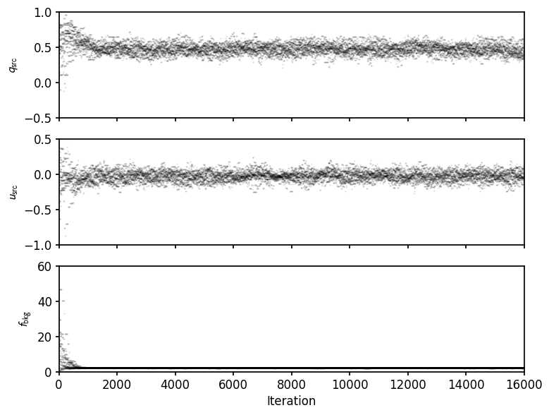
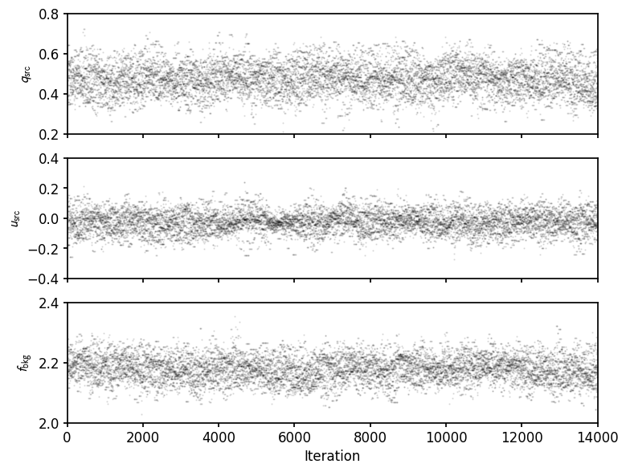
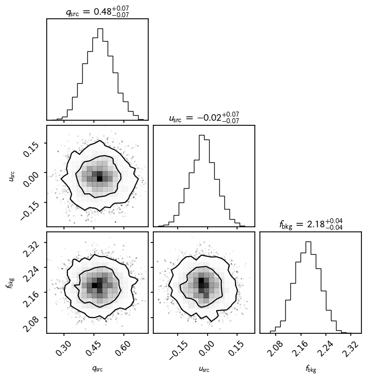

Running polarimetric fits with an MCMC¶
Weights used:
Spatial
Spectral
LeakageLib provides a simple way to run polarimetric fits with an MCMC. You would use the fit_mcmc function instead of fit. This is a great way to handle non-Gaussian posteriors.
This example recreates the simulated data point source fit example, with mcmc fitting. First, we repeat the setup described in that example.
[1]:
import leakagelib
datas = leakagelib.IXPEData.load_all_detectors_with_path("data", "ps")
for data in datas:
data.iterative_centroid_center()
data.retain(data.evt_energies > 2)
data.retain(data.evt_energies < 8)
settings = leakagelib.FitSettings(datas)
settings.apply_circular_roi(280)
settings.add_point_source() # Named "src" by default
settings.fix_flux("src", 1)
settings.set_initial_qu("src", (0.5,0))
settings.set_spectrum("src", lambda e: e**-1.5) # Gamma=1.5, unabsorbed powerlaw
settings.add_background() # Named "bkg" by default
settings.fix_qu("bkg", (0, 0)) # Assume an unpolarized background
settings.set_spectrum("bkg", lambda e: e**-2.5) # Gamma=2.5, unabsorbed powerlaw
fitter = leakagelib.Fitter(settings)
>>> PyXSPEC is not installed, you will no be able to use it.
>>> Reading (in memory) /opt/homebrew/anaconda3/lib/python3.12/site-packages/ixpeobssim/caldb/ixpe/xrt/bcf/vign/ixpe_d1_obssim20240101_vign_v013.fits...
6282 events were cut for being outside the region of interest.
>>> Reading (in memory) /opt/homebrew/anaconda3/lib/python3.12/site-packages/ixpeobssim/caldb/ixpe/gpd/cpf/arf/ixpe_d1_obssim20240101_v013.arf...
>>> Using cached xEffectiveArea object at /opt/homebrew/anaconda3/lib/python3.12/site-packages/ixpeobssim/caldb/ixpe/gpd/cpf/arf/ixpe_d1_obssim20240101_v013.arf...
Data set ps DU 1 had no exposure map loaded. Please load an exposure map if you are fitting to events in the vignetted portion.
Now we perform an MCMC fit simply by using the fit_mcmc function instead of fit. Note that you can save the mcmc samples to a file if you wish, using the save_samples argument.
[2]:
result = fitter.fit_mcmc(n_iter=1000)
100%|██████████| 1000/1000 [00:58<00:00, 17.19it/s]
Plotting the results shows that they suffer from a burnin problem:
[3]:
result.display_samples();

We can address this by removing the first few events
[4]:
result.burnin(2000)
result.display_samples();

The corner plot shows nice uncertainties as well
[5]:
result.display_corner();

This fit result still acts like a normal fit result, and you can still print it to get Gaussian uncertainties (the covariance of the parameters). These are quite similar to the results obtained through the Gaussian-approxmating LeakageLib fit (see the point source example).
You can also access the result.samples array to get all the fit samples, and result.samples[result. sample_mask] to get all the samples after the burnin was removed.
[6]:
print(result)
print("\nAll samples: ", result.samples)
print("\nSamples after burnin: ", result.samples[result.sample_mask])
FitResult:
q (src) = 0.4700 +/- 0.0727
u (src) = -0.0251 +/- 0.0687
f (bkg) = 2.1808 +/- 0.0410
Polarization:
PD (src): 0.4707 +/- 0.0727
PA (src): -1.5279 deg +/- 4.1824
Likelihood 17886.601035753927, dof 15891
MCMC fit
All samples: [[-2.19728318e-01 1.13574211e-01 4.11984541e+01]
[ 7.73481823e-01 -5.08424845e-01 6.80715754e+00]
[ 1.38095323e-01 -1.48281325e-01 2.98552325e+01]
...
[ 3.89692554e-01 -9.12200336e-02 2.23911392e+00]
[ 5.63769062e-01 -1.15833489e-01 2.17420809e+00]
[ 4.40742106e-01 -2.62644205e-02 2.15139154e+00]]
Samples after burnin: [[ 0.34987545 -0.05919621 2.21639814]
[ 0.39156906 -0.17524523 2.25278673]
[ 0.38718894 0.13706566 2.17036195]
...
[ 0.38969255 -0.09122003 2.23911392]
[ 0.56376906 -0.11583349 2.17420809]
[ 0.44074211 -0.02626442 2.15139154]]